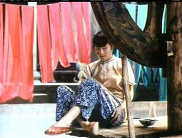

| Ju Dou/A,B- |
| Pioneer/1990/98/FS 1.33 |
What a magnificent film. Such a sexy noir. The use of brilliant color against the plain
almost medieval setting of the film is startling. Red and yellow/gold are predominant in the film,
colors of good fortune surrounding these unfortunate characters. I can't believe the yardage Zhang
Yi-Mou got out of the fabric. You could can easily see the
comparisons between Ju Dou and Hollywood’s The Postman Always Rings Twice. There is
a clear line of heritage in the storytelling. But while the typical noir film uses black and white
images, shadows and hi key lighting to provide a dramatic visual fabric, Director Zhang Yi-Mou
works with startling color to embellish emotion. And there is an abundance of emotion on display
within the restrictive confines of the rural Chinese dye factory in this story of passion set in
the 1920's.The director takes the Hollywood noir concept and stamps it with his own astounding
visual explosiveness.
Jinshan, the aging and childless
owner of the dye factory, enters into marriage with a beautiful young woman hoping to produce an
heir. Instead, he releases a stream of lava flow from a volcano of sexual passion that must explode
between his younger nephew and his unfulfilled wife. The resultant screen sensuality is intense.
 |
| Ju Dou hungrily watches Tian-qing© |
Gong Li is perfection itself in the role of
Ju Dou. You can feel her blood flow hot with passion under the hot lens of Zhang’s camera.
This exquisite actress combines innocence and beauty with a desperate practicality as the linchpin
to the unusual triangle. Li Baotian plays her lover with a strangely affecting combination of
restraint, fear and hunger. All of the actors seem a natural part of this world.
Ju Dou stands as a testament to the masterful camera vocabulary of
the director. Though compromised significantly by a cropped laser disc transfer, the compositions
of the simple mechanical structures of the traditional dye factory make fascinating subject matter
for the camera. Many of the erotic scenes unravel in these close quarters as Zhang’s camera
records the passion with consummate power. Just as he uses color to enhance the sexual intensity,
the sudden release of bolts of fabric from their rolls provides added impact as lovers embrace. The
photography is incandescent. Light filters through bolts of material as they
hang to dry, washing out the brilliant colors. There's a scene near the end when the bolts of
fabric are shot from such an angle that they look like mourners surrounding a grave. This is one of the most visually powerful films I can recall seeing.
There are many unexpected turns to the script. The
child's first laugh is so startling, so cold, so frightening and so unexpected. The film is at times a romance, a thriller, a chiller and even comes close to
the supernatural as the eerie chords of Xia Ru-jin's musical score reverberate through the rafters
of the wooden structure where this tragic tale unfolds. The many startling images will stay with
you long after the film's fiery finish.

Selections from the feature archive include articles on Akira
Kurosawa, Frank Darabont,
Blonde
Bimbos, Hollywood Street Gangs,
or Vietnam:
The Hollywood Pariah, and many more....

During World War II, Hollywood pumped out war movies one after the other. Vietnam was was another
story. As far as Hollywood was concerned it was a pariah.
The Exquisite Muse of Zhang Yimou

The powerful image-making of Zhang Yimou has revealed itself in
virtually every film he has made. Coupled with his remarkable collaboration with actress Gong Li,
Zhang's has built a stunning body of work Click the image to read all about it.


The National Film Preservation Foundation (NFPF) is the nonprofit organization created by the U.S. Congress to save
America's film heritage.
Imaging Science Foundation
The Imaging Science Foundation promotes proper standards in home theater viewing. ISF trained
technicians offer monitor calibration services to consumers. The difference in a properly
calibrated monitor can be astounding. Click on the image to find an ISF member near you.

Easy to use interface with lots of vintage posters for sale.
In the Mine are movie posters, autographs of your favorite stars,
original movie heralds and more!
The publication you can't do without if your interested in Movie Posters.

The Movie Poster Archive includes extensive poster images from the films of stars like Susan Hayward, Kirk Douglas, Katharine Hepburn and many more. Our featured star is Lana Turner.